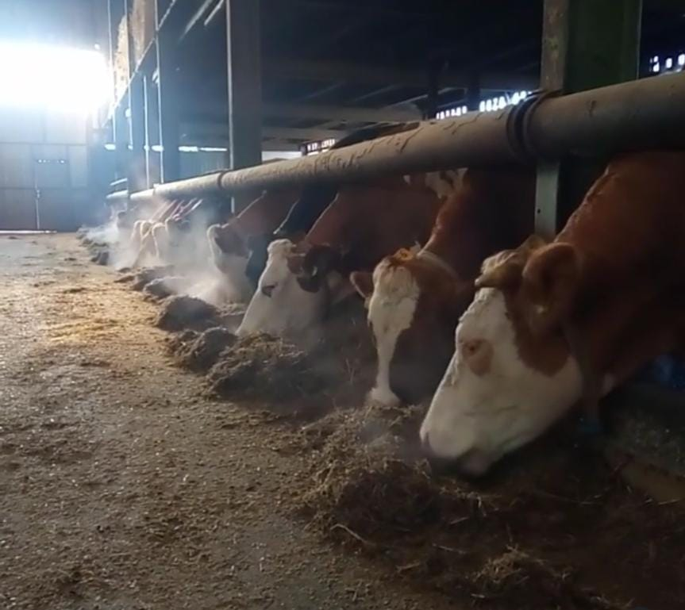
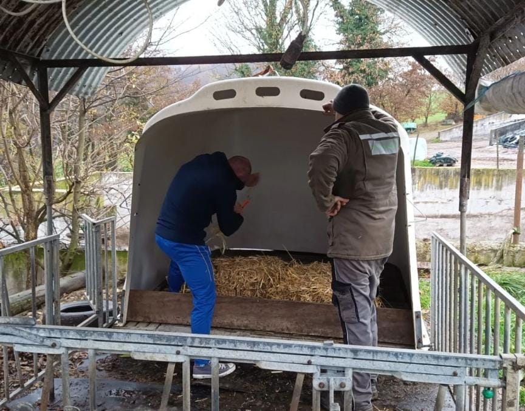
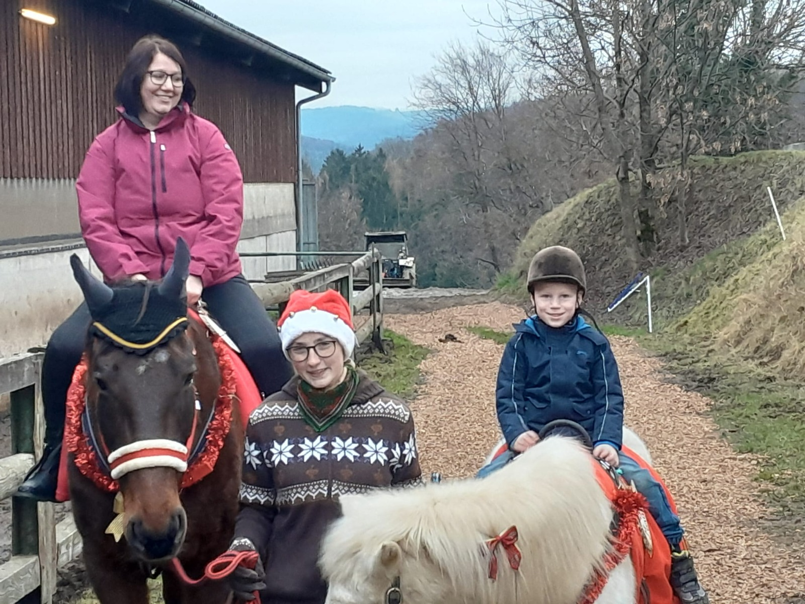
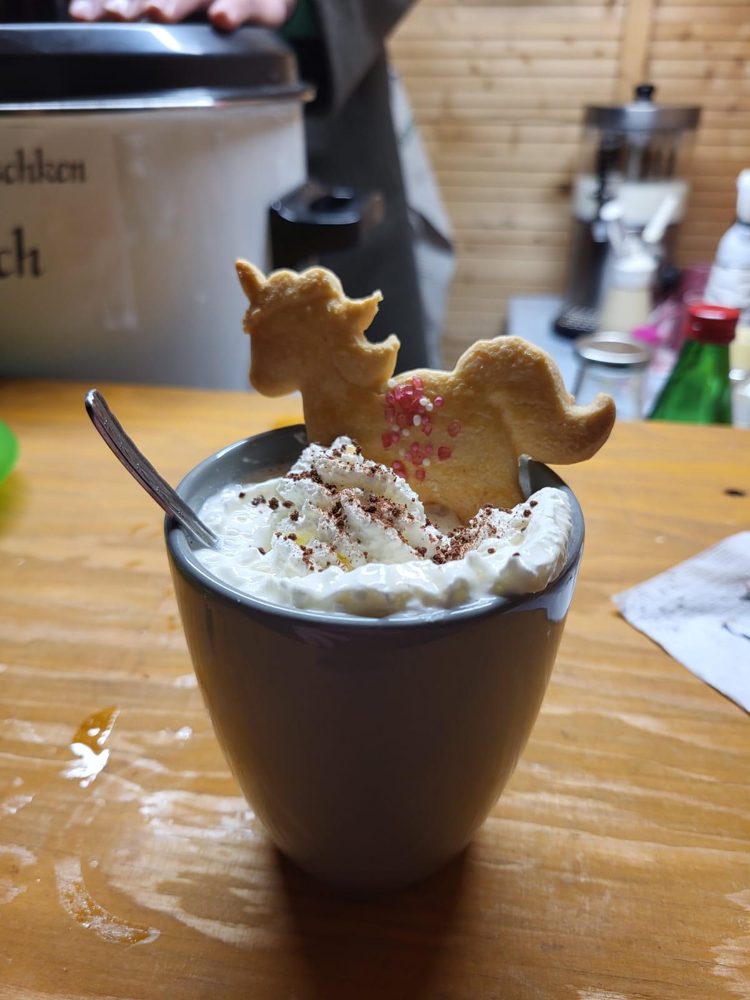

08. Dezember
Hofadvent
Adventmarkt
direkt beim Bauernhof
Veranstaltungsort
Handl Hof
Racking 4
3134 Pyhra
Stallführung auf dem Bauernhof
Entdecken Sie bei unserer Stallführung, wie moderne Landwirtschaft
funktioniert! Erfahren Sie alles über die Haltung unserer Kühe und den
Weg der Milch – vom Stall bis ins Glas. Ein besonderes Highlight ist
unser Melkroboter, der die Kühe automatisch und schonend melkt. Lassen
Sie sich zeigen, wie innovative Technik und traditionelles Handwerk auf
unserem Hof zusammenarbeiten, um täglich frische Milch zu produzieren.
Diese Führung gibt Ihnen spannende Einblicke in den Alltag eines
Milchbetriebs!


Ponyreiten für Groß und Klein
Unser Ponyreiten bietet Spaß für die ganze Familie! Die Kleinen können
auf unserem freundlichen Pony ihre erste Reiterfahrung sammeln, während
auch ältere Kinder und Erwachsene auf unserem Pferd eine gemütliche
Runde drehen können. Unter sicherer Führung haben sowohl Anfänger als
auch geübte Reiter die Möglichkeit, die Tiere in ruhiger Atmosphäre
kennenzulernen und eine entspannte Runde über den Hof zu genießen. Ein
Vergnügen für Groß und Klein!

Kulinarische Genüsse am Adventmarkt
Auch für das leibliche Wohl ist bestens gesorgt! Genießen Sie warme
Getränke wie Punsch, Glühwein und Kakao, die Sie in gemütlicher
Atmosphäre aufwärmen. Dazu bieten wir eine Auswahl an herzhaften
belegten Broten und eine köstliche Vielfalt an selbstgebackenen Kuchen.
Lassen Sie sich verwöhnen und verbringen Sie entspannte Stunden bei uns
am Adventmarkt.

